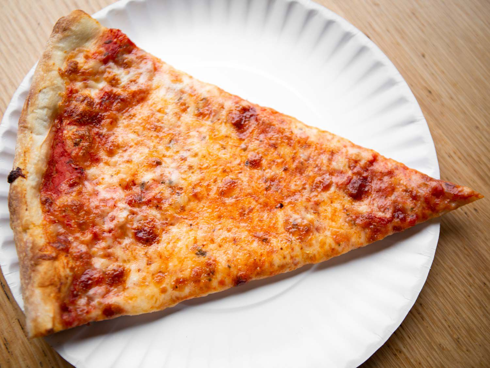

Making a pizza doesn't have to be hard, let me show you how!
Dough:
- 2 ½ cups warm water (600 mL)
- 1 teaspoon sugar
- 2 teaspoons active dry year
- 7 cups all-purpose flour (875 g), plus more for dusting 6
- 3 tablespoons extra virgin olive oil, plus more for greasing
- 1 ½ teaspoons kosher salt
- ¼ cup semolina flour (30 g)
Sauce:
- 1 28 oz (828 ml) can crushed tomatoes
- 2-4 tbsp (30-60 ml) olive oil
- 2-4 tbsp (30-60 ml) olive oil
- 1 tsp (4g) sugar 2 tsp (a fraction of a gram, I don't know)
- dried oregano
Cheese:
- 24-32 oz (680-910 g) whole-milk, low-moisture mozzarella
- No Name Brand pizza mozzarella from NO FRILLS works great!
- freshly grated (6-8 oz / 170-225 g per pizza) grated parmesan for dusting (maybe 10 g per pizza?)
Toppings:
- Anything you want except for pineapples
Instructions 👨🍳 👩🍳
This recipe was inspired by Adam Ragusea and Tasty's
Dough:
- “Bloom” the yeast by sprinkling the sugar and yeast in the warm water. Let sit for 10 minutes, until bubbles form on the surface
- In a large bowl, combine the flour and salt. Make a well in the middle and add the olive oil and bloomed yeast mixture. Using a spoon, mix until a shaggy dough begins to form.
- Once the flour is mostly hydrated, turn the dough out onto a clean work surface and knead for 10-15 minutes. The dough should be soft, smooth, and bouncy. Form the dough into a taut round.
- Punch down the dough and turn it out onto a lightly floured work surface. Knead for another minute or so, then cut into 5 equal portions and shape into rounds
- 3 tablespoons extra virgin olive oil, plus more for greasing
- Grease a clean, large bowl with olive oil and place the dough inside, turning to coat with the oil. Cover with plastic wrap. Let rise for at least an hour, or up to 24 hours. THE LONGER THE BETTER!
Sauce:
- Combine ingredients, taste, and adjust if necessary
Cheese:
- Shred
Assembly:
- Take out the dough 1 hour before you want to eat them
- Preheat your oven/grill with your stones 1 hour before baking
- Liberally dust a pizza peel with cornmeal (or something similar) and the pizza stone when assembling.
- Stretch the dough to the widest size and shape that will fit on your peel and stone/steel.
- Take it out, dust the sauce layer with parmesan, then cover with the mozzarella and your faovorite toppings and trasnfer back onto stone
- Wait till the crust is well-browned and the cheese has browned a bit ((usually 6-7 minutes), remove and let cool for 2 minutes before eating
- Repeat for the next 4 pizzas and enjoy!
Return to top
Return to Homepage